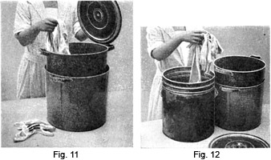
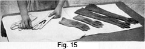
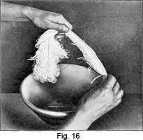

1931 - Laundering and Dry Cleaning
Woman's Institute of Domestic Arts & Sciences,
by Mary Brooks Picken
Cleaning Special Articles
FURS
85. Although silk and wool materials may be thoroughly washed by putting them through several cleaning baths and rubbing the spots as the work is proceeded with, it will be found that some very delicate fabrics might be injured by such handling. Again, it would not be practical to immerse some articles, such as furs, heavy coats, or mattresses, in a cleaning fluid, Such things may be surface cleaned very satisfactorily.
86. Cleaning White Plush and Fur.—A thin paste of gasoline and common wheat flour can be used for washing white beaver, white plush, and white fur. To make the paste, pour a pint of gasoline into a clean china bowl and put into it 2 tablespoonfuls of white flour. Stir the mixture until a thin, even paste is formed and then wash in it the materials that are to be cleaned. An oblong, shallow pan, such as a roasting or baking pan, makes the best container.
When the washing is finished, dry the materials thoroughly, first squeezing out as much as possible of the gasoline. Then brush the white fur or white plush with a stiff-bristle brush. However, if the fur is of the long-hair variety, it should be combed.
87. Cleaning Colored Furs With Bran.—Fur of any color may be cleaned with dry bran. Purchase a pound of clean bran at any feed store. Put it in a dry pan and set it inside the oven until it becomes heated to such a temperature that the hand cannot be held in it with comfort, as this insures its being thoroughly dry. Stretch the fur on an ironing board and hold it in place by pins set fairly close together, so that it is firmly fastened to the board. Brush the fur with a stiff-bristle brush, rub in thoroughly the heated bran, and brush again to remove the surplus bran. Then unpin the fur and shake it well to remove all evidences of the bran.
This method not only cleans the fur but makes it glossy. It can be applied to plush also, but plush requires an additional steaming process before the nap is sufficiently freshened.
88. Cleaning Furs With Corn-Meal.—Furs may be cleaned with corn-meal in the same way as with bran. Use white corn-meal for white or light furs; for darker furs, yellow is satisfactory. Heat the meal so that it is thoroughly dried and cover the fur with it. Let it stand 10 or 15 minutes and then take it out by brushing and shaking the fur thoroughly. Then put the fur out in the air.
89. Cleaning Furs With Fullers' Earth.—Fullers' earth is often used for cleaning furs, especially when they are very soiled. Use the fullers' earth as any of the other absorbents.
90. Cleaning Furs With Cleaning Oils.—If absorbents are not effective, furs may first be put through the cleaning baths and then, after drying, treated with corn-meal. It must be remembered that furs put in cleansers must be subjected to heat after evaporation for a greater length of time than fabrics in order to deodorize them thoroughly.
91. Cleaning Furs With Commercial Preparations.—Besides the simple, home methods that have been described, there are commercial preparations that may be bought from any drug store and used successfully according to the directions that accompany them.
GLOVES
92. Cleaning Kid Gloves.—Kid gloves that are not seriously discolored or stained with perspiration may be easily cleaned by immersing in several cleaning baths, as for garment cleaning, but, if necessary, they may be handled more vigorously than fabrics.
Fig. 11 shows the warm cleansing fluid bath in which the gloves are first
immersed. Allow them to remain in this bath a few hours to loosen the dirt;
then rub between the hands and scrub with a stiff brush, as in Figs. 12 and
13, or rub on a small washboard. Next, rinse thoroughly and wipe with a soft
cloth. If necessary, dry further with Turkish towels, as in  Fig. 14, and
put on glove stretchers. Gloves should not be dried too rapidly, as this
tends to make them stiff, but they may be dried as much as possible with
towels and then laid in a warm place to finish drying. When thoroughly dry,
shape them carefully and smooth them with the hands, as illustrated in Fig.
15.
Fig. 14, and
put on glove stretchers. Gloves should not be dried too rapidly, as this
tends to make them stiff, but they may be dried as much as possible with
towels and then laid in a warm place to finish drying. When thoroughly dry,
shape them carefully and smooth them with the hands, as illustrated in Fig.
15.
Water stains on kid gloves are difficult to remove successfully, but by treatment in the cleanser, they may be somewhat lessened.
Perspiration stains cannot be removed with any assurance of good results.
93. Cleaning Chamois and Doeskin Gloves.—Chamois and doeskin gloves may be washed on the hands with pure, mild soap or soap flakes and lukewarm water, but they require great care in laundering to have them soft and pliable when dry. The more soap constantly used in the water, the softer and more silky will the gloves appear.
Free the dirt in a soapy bath and then put the gloves through several lukewarm rinse waters. In the last one, dissolve enough soap flakes or pure soap to make the water look milky. Without twisting, squeeze as dry as possible in a towel. Pull the gloves into shape carefully and smooth out the fingers by blowing into them. Finish the drying by spreading the gloves flat on a dry towel.
Never hang such gloves in the sun or near the heat, for they are likely to dry too quickly and become hard.
94. Cleaning Buckskin Gloves.—Buckskin gloves may be washed with pure white soap and water or in a cleaner. The latter is perhaps more satisfactory unless the gloves are of very good quality. A brush with very stiff bristles should be used to cleanse them thoroughly.
95. Cleaning Washable Kid.—Put gloves of this kind on the hands and wash them in suds made with pure white soap or soap flakes and lukewarm water. Rinse thoroughly and dry them slowly. When dry, rub a little talcum powder into the gloves to restore the soft finish.
HATS
96. Hats represent a special branch of cleaning, and come properly under the head of millinery renovating. For home use, however, the following simple suggestions will be found of value.
97. Cleaning White or Light Felt Hats.—First brush white or light felt hats thoroughly, then go over the surface lightly with fine sandpaper. If very soiled, use a cleaner and a light woolen cloth and rub the felt well. Then, brush and shape with the hands.
Still another method is to make a paste of powdered magnesia and water and spread it over the hat. This may be brushed off when thoroughly dry.
White, also colored, beaver hats may be cleaned with wood alcohol applied with a soft brush.
98. Cleaning Straw Hats With Oxalic Acid.—Hats made of milan, hemp, panama, and rough straw braids in natural colors may be cleaned by using a weak solution of oxalic acid.
To prepare an oxalic solution sufficiently strong for a badly sunburnt hat, dissolve 1 tablespoonful of oxalic acid in 1 pint of water, a process that will require from 15 to 20 minutes. When the acid is dissolved completely, pour 1 teaspoonful of the solution on a clean pine board. If it foams, or forms bubbles, it is too strong and should be weakened. Add more water and test the solution again. As soon as it fails to foam, it is of the correct strength.
99. While cleaning a hat by this method, do not put the hands in the acid solution. Use a small white-bristle scrubbing brush and scrub the hat quickly, beginning at the center of the crown and rubbing around and around until the side crown is reached; then continue around the side crown and on to the brim, rubbing the brush in a circle and in the same direction all the time.
Rinse the straw quickly with clean water, using the same brush for this purpose. Place the hat in the air or in the sunlight so that it will dry. The work must be done quickly in order that the straw may not become too damp and puff up. When the hat is perfectly dry, press it into shape under a damp cloth, using a hot iron. The ironing board used for this purpose should be heavily padded and the pressing should be done very lightly; otherwise, the imprint of the iron will flatten the straw. The damp cloth used should be lintless, if possible.
100. Cleaning Men's Straw Hats With Salts of Lemon.—Straw hats may be cleaned in a solution of 1 tablespoonful of salts of lemon to 1/2 pint of water. Dissolve by boiling, and after the solution cools apply to the hat with a firm brush, starting at the top. Dry with a soft cloth. Do not allow this cleaner to touch the sweat band, as it will harden the leather.
101. Bleaching Straw Hats.—To bleach a straw hat, make a paste by adding to the juice of 1 lemon enough powdered sulphur to make it smooth. Cover the hat well and put it in the sun until dry. Then brush with a fine brush dipped in water and wipe with a dry cloth.
102. Dressing a Straw Hat.—To give a glossy finish or to stiffen a straw hat, apply a solution of 1 part transparent shellac to 5 parts wood alcohol.
FEATHERS
103. Cleaning White or Light-Colored Feathers.—When cleaning feathers, aigrettes, and paradise plumes that are white or light in color, a large china or earthenware bowl, as shown in Fig. 16, should be used. Dry the bowl thoroughly, and pour into it a pint of clean cleanser. Wash the feather by sousing it up and down thoroughly.
It is generally unnecessary to rub the flues of the feathers, but if you do rub them, start at the point where the flues are joined to the stem of the feather and move the tips of the fingers outwards along the flues, pressing lightly. When the tips of the flues are reached, lift the hand and start again at the stem. Do not rub the flues back and forth, but move the fingers always in the same direction; that is, outwards from the stem to the tips of the flues.
Continue the operation until all of the flues on both sides of the stem are washed clean. Then pick up the feather and draw it through the lightly closed fist, in the manner shown in Fig. 16, in order to squeeze out most of the cleanser from the flues. Repeat this operation several times, until the greater part of the cleanser has been squeezed out.
104. When the feather has been washed thoroughly in the manner just described, throw away the dirty cleanser used for washing it, and wipe the bowl clean and dry. Pour in a pint of fresh cleanser, and to it add 2 tablespoonfuls of wheat flour. Stir the flour into the cleanser until a smooth, thin paste is formed. Then stir the feather around or lay it in the paste and rub the flues lightly from the stem toward the ends with the tips of the fingers, in exactly the same manner as described for cleaning the feather the first time. When the feather has been washed completely in this way, draw it through the closed hand to squeeze out the cleanser, and shake it in the air until the remaining cleanser has evaporated and the feather is almost dry, a process that will require from 2 to 5 minutes.
105. When the feather is practically dry, it must be rolled in clean corn starch. To do this, spread a piece of tissue paper flat on the table and sprinkle it lightly but evenly with corn starch. Roll the feather back and forth in the corn starch by twisting the stem until it is well covered. Then shake the feather to remove the loose particles of starch adhering to the flues, and the cleaning process is finished.
The advantage of this method of cleaning is that it will not take the curl out of the feather, as in the case of soap and water, but it must be remembered that this process is for cleaning white and light-colored feathers only.
106. Cleaning Black or Dark-Colored Feathers.—Because of the dyes used to color them, feathers or plumes that are dyed with black, or with other dark dyes, must be washed in wood alcohol instead of a cleaner. The method of washing, however, is exactly the same as that described in Art. 103, except that the feathers are not put through a flour paste, nor are they rolled in corn starch after they are dry, as the white starch would show plainly on the dark flues.
107. Cleaning Feathers With Soap and Water.—It is possible to clean feathers with soap and water, if desired, but in doing so all the curl will be taken out of the flues, so that the feathers will have to be curled again when dry. Yet this is perhaps the favorite method of cleaning white feathers.
To clean a white feather in this way, make a good suds of warm water and pure soap or soap flakes. Wash the feather in this according to the method described for washing in a cleaner, omitting the flour paste. Then rinse in two or three changes of clean water, the last one being slightly blued. When the drying is practically complete, roll the feather in clean corn starch to give weight to the flues. Shake off part of the starch, and the flues are ready to be steamed and curled.
Paradise aigrettes also may be cleaned successfully by this method.
108. Cleaning Feather Banding.—Feather banding cannot be successfully cleaned unless the feathers are attached by a woven process or by stitching. Pasted banding cannot be renovated. To clean feather banding, either the method for cleaning white or light-colored feathers or that for cleaning black or dark-colored feathers may be employed, according to the color of the banding.
VELVET
109. Preliminary Precautions.—Velvet may be put through the cleaning baths if very soiled, but since it takes such fabric a long time to dry, surface cleaning is usually better for it.
A mistake many women make in the effort to restore the appearance of velvet is their failure to realize that it must be cleaned before it is steamed. Failure to clean velvet accounts for the dull and rather smeary appearance of the collars of overcoats and suits cleaned at home.
The first thing, then, to do in cleaning velvet is to remove all dust by beating it gently on a padded surface or by brushing. A brush with firm bristles that are not too stiff should be used, a cheap hair brush being satisfactory if kept for no other purpose. Also, to remove surface lint only, a roll of old velvet made into a little pad about 5 by 2 inches makes a splendid brush. After brushing, beat gently once more and the velvet is then ready for the actual cleaning.
110. Cleaning Silk Velvet.—In order that silk velvet may be cleaned easily and quickly, it must be flat and smooth; therefore, lay the piece on the top of an ironing board, stretch it so as to remove all wrinkles, and pin it on all four edges to the cloth covering of the ironing board.
The actual cleaning is done generally with chloroform applied by means of a small sponge. Pour a few drops of chloroform on the sponge and rub it carefully over the pile of the velvet. The chloroform will evaporate very rapidly, so, as soon as the sponge becomes dry, pour on a few more drops and proceed as before. In addition to removing stains and spots, this method of cleaning will restore the color of the velvet to a certain extent. In using chloroform, remember to do the work out of doors, on a porch, or near an open window, never in a closed room.
Wood alcohol or one of the other spotting agents may be used instead of chloroform with good results, alcohol being the best, for dark colors.
Whatever solvent you use, do not consider the velvet cleaned until you have steamed it. This process, together with the gentle brushing you give the velvet during the steaming, will raise the nap.
111. Cleaning Cotton Velvet.—Dark, cotton velvet and corduroy may be cleaned by the use of solvents, but white or light-colored, cotton velvet and corduroy generally must be wet cleaned. Before they are subjected to the soap bath, they must be well brushed. They may be washed by hand or in a washing machine, and allowed to dry without being wrung. If the material is white cotton velvet or corduroy and it needs bleaching, use Javelle water, but do not use it if there is any silk in the material, as it will harm the silk fiber.
SILKS
112. Cleaning Silk With Absorbents.—If the soil on silk is fresh and partakes of the nature of grease or coloring matter or some stain made by cocoa, for instance, which contains both grease and color, it may be removed by French chalk, fullers' earth, powdered magnesia, starch, pipe clay, bran, or salt. The absorbent should be warmed before being applied, as the heat loosens the grease more quickly.
Lay the silk on clean paper and cover it with the absorbent, or put it between two layers of the absorbent. If the powder takes up much dirt immediately, scrape it off and apply a fresh supply. Otherwise, lay the silk away for a day or two; then shake and brush out the powder. It is surprising what dark, ugly marks can be removed in this simple way.
113. Cleaning Satin.—Satin of good quality may be cleaned very satisfactorily. Make a weak solution of borax by dissolving 1 tablespoonful of powdered borax in 1 quart of water. Stretch the satin on top of the ironing board or the work table and sponge it lightly, dipping the sponge into the borax solution and rubbing always with the grain of the satin and not across it. When the satin has dried, iron it on the wrong side only.
This process is excellent for cleaning, but will not restore the color. If there are grease spots on the satin, they should be removed by a stain remover or an absorbent previous to sponging.
RIBBONS
114. Renovating Velvet Ribbons.—To renovate velvet ribbons, first brush out all dust and then sponge the wrong side with 1 part of ammonia to 3 parts of water, or with the solvents mentioned for cleaning piece velvet. The ribbon is then ready to be steamed according to one of the methods described in Arts. 80 and 81 for steaming velvet.
115. Cleaning Colored Silk Ribbons.—Gasoline or one of its derivatives produces good results in cleaning silk ribbons. Either sponge or dip the ribbon; then lay it between layers of Turkish toweling and take out as much moisture as possible. Press on the wrong side first, with a soft muslin cloth over it, and then without the cloth. Never press ribbon on the right side.
116. Washing Ribbons.—Although soap-and-water washing is not precisely a dry-cleaning process, it is a safe method of cleaning ribbons of good quality. These can be washed in warm suds of soft water and soap jelly or soap flakes. Rinse in clean, soft water and hang up to dry without squeezing or wringing so as to avoid creases. Iron while damp, first with a cloth over them, and then without.
117. Sponging Ribbons.—Another method of wet washing ribbon is to spread the ribbon flat on a smooth hard surface, like a table top or a marble slab, and sponge or brush with lukewarm water in which a little mild soap has been dissolved. Rinse by holding the ribbon stretched between the hands and passing it through a bowl of clear water of the same temperature. Dry by spreading it out straight and flat on a smooth, hard surface. Draw the hand gently over it to press out air bubbles, which may have formed under the ribbon and would make it look "blistered" when dry. No pressing will be necessary.
LACES
118. Cleaning With Solvents.—As laces are very delicate, they should not be handled more than is necessary in cleaning them. Very fine laces should be basted to muslin, as described in Art. 141, Home Laundering, and washed thoroughly in a cleaner. The same precautions should be taken in order to keep them from having any delicate fibers broken. Shaking in a fruit jar, as explained in Art. 140, Home Laundering, is a very satisfactory method.
Alcohol, carbon tetrachloride, or a similar solvent may be used instead of a gasoline derivative.
119. Cleaning With Absorbents.—A very simple way to clean laces that have become greasy or spotted by something containing oils or fats is to lay them in French chalk, powdered magnesia, or one of the other absorbents. Quicker action and better results are obtained if the powder is heated. Allow the lace to remain in the powder for a day or two before shaking it.
120. Cleaning Gold and Silver Laces.—It is possible to brighten metal laces by putting them through a cleaning bath, but it is not possible to restore them entirely. Wash the laces carefully in the cleanser and then lay them flat and rub them with soft cheesecloth that has been dipped in alcohol.
121. Cleaning Chiffon, Veiling, and Silk Net.—Such sheer fabrics as chiffon, veiling, and silk net are best cleaned by being left in a covered fruit jar partly filled with cleanser for an hour or so. Remove the article without disturbing the dirt that will settle at the bottom of the jar. Dip in clean cleanser and roll in a towel to dry.
MISCELLANEOUS ARTICLES
122. Mattresses, Bolsters, and Pillows. — When mattresses become spotted or soiled they may be cleaned by washing the surfaces with warm water and Ivory soap, using a soft brush. Allow one side of the mattress to dry before washing the other side.
In the case of bolsters and pillows, also, lukewarm water with a good suds of Ivory soap makes the most effective cleaning method. Add 2 tablespoonfuls of ammonia to a tub of water; then dip and squeeze and turn the pillows or bolster until clean. Rinse well in clear water and hang in the sun to dry. A windy day is best for drying. Always clean pillows before the ticking becomes too badly stained.
For spots on such articles that are otherwise clean, make a paste of starch and household ammonia. Coat the spot thickly with this and allow it to stand 12 to 24 hours before brushing. Also, if possible, place the stains in the sun. Repeat such applications, if necessary.
123. Neckties.—Men's neckties should be put through cleaning baths and very carefully spotted, especially the part that is tied. Spotting, in this work, means not merely removing spots or soil, but also streaks of wear. Rub these carefully in order to remove them.
In cleaning a tie, it is essential to remove the wrinkles as well as to remove the soil. To do this, it is often necessary to open the seam over the part that is tied and then press the silk of the tie from the wrong side as well as the interlining.
124. Soiled Coat Collars.—The soiled collars of coats may be cleaned with a thick lather made by using much soap and a small amount of water. Of, if preferred, the following mixture may be used:
- 1 1/2 ounces white Castile soap
- 1 ounce denatured alcohol
- 1 ounce ether
- 4 ounces ammonia
Cut the soap fine, add 1 pint of soft water, and heat until the soap is dissolved. Add 3 quarts of cold water and then the other ingredients, and bottle tightly for future use. Shake before using.
Apply the mixture to the surface to be cleaned with a soft brush; then wipe thoroughly with a non-linting cloth, and rinse.
125. Silk Parasols.—Open the parasol and clean the surface with a piece of cheesecloth dipped in a cleaner. After rinsing with clean cleanser, go over the surface with alcohol. Wipe with a dry, soft cloth and dry further by whirling in the air. Cotton or linen parasols may be washed by using the soap sponge as suggested in Art. 39.
136. Rain Coats.—It is difficult to restore the new appearance to rain coats, but soap and water will serve in some cases. Soiled spots may be removed by scrubbing the surface with these cleaning agents. The rain coat should then be rinsed thoroughly and hung on a coat hanger dripping wet.
Avoid using gasoline or one of its derivatives, as it destroys the rubber used in waterproofing.
127. Patent Leather.—If patent leather becomes finger-marked, dip a cloth in cold milk and rub until the marks have disappeared. When dry, polish with a clean, dry, soft cloth. Vaseline is good for both softening and polishing patent leather.
128. Shoes and Slippers.—The appearance of suede, satin, or metal-cloth shoes and slippers may be improved greatly by rubbing with a tampon dipped in cleanser. It is not generally satisfactory to try to wash the shoe thoroughly because the dressing on the edges of the soles is likely to run into the upper portion.
Suede shoes may be greatly improved by brushing with a wire brush, or by rubbing the surface lightly with No. 00 steel wool. There are commercial cleaners, too, that come in a variety of colors. Perhaps the most satisfactory is in the form of a stick, one end of which is the cleaning agent and the other, a brush.
White or light-colored kid shoes may be cleaned by any of the commercial preparations for such purposes.
129. Buckles.—To clean cut-steel buckles that have become rusty, rub them with a stiff-bristle brush that has been dipped into a thin paste made by mixing 1 teaspoonful of sweet oil and 1/2 teaspoonful of emery dust. After the buckles have been cleaned in this way, wipe them dry and then brush them with a soft-bristle brush, so as to remove the rust and the particles of emery dust and thus make them bright. In brushing, take care that none of the emery dust gets into the eyes.
130. Buttons.—To clean and brighten buttons, whether of bone, metal, or glass, polish them with French chalk, using a chamois or a soft cloth for doing the work. In cleaning carved buttons, use a soft brush to remove every particle of chalk.
131. Carpets and Rugs.—It is possible to clean carpets with a solution made by dissolving 1/4 cake of white soap in 2 quarts of boiling water. When lukewarm, add 2 tablespoonfuls of household ammonia and 2 quarts of lukewarm water. Wipe the carpet with this, and follow with an application of clean water. Although strictly speaking, not a dry-cleaning reagent, this solution, because of its efficacy, is very widely sanctioned.
If one wishes simply to freshen a carpet or rug, it may be wiped, after sweeping, with vinegar and water in the proportion of 1 cupful of vinegar to 1 gallon of lukewarm water.